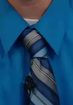
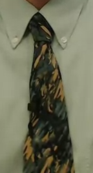
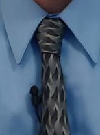

Rixner's Tie Catalog
The neckwear of our glorious leader, Professor Rixner, as seen through COMP 140 video lectures.
| Professor Rixner has confirmed that he possesses 59 ties. (Click to jump to) |

Gray and blue stripe |
Black and green flower |

Grayscale and red stripe |
Gray bevel |
Light bevel |
Green square |
Purple and gray mix |
Red and white dashes |
Red and silver checker |
Gray and blue thin stripe |
Black and white stripe |

Green camo |
Purple Persian design |
Soft olive |
Blue and navy stripe |
Dark scales |
Purple and gray stripe |
Invisible |

Gray wave |

Dark green stripe |
Olive dot |
Christmas |
| Not every tie has appeared in a COMP 140 video lecture |
Red and white owl print |
Pimpin' green |
Black and gold design |
Black and green stripe |
Picture collage |
Black and yellow |
Ties seen in video lectures
This tie has appeared in 2 video lectures. Did you know that blue and gray are the official school colors of Rice? Professor Rixner does. That's why he shows his school spirit by wearing this blue-gray tie. Some people think that computer science means you have to stay inside on a computer, or be a boring person. That can't be true, or else why would Professor Rixner be so spirited for his university? Go Rixner! Go Rice!
This tie has appeared in 4 video lectures. It combines the ineffable One-ness that the American Transcendentalists felt with nature with the smart style of fashionable neckwear. Sporting this tie, Professor Rixner proclaims the power of the individual to resist the siren call of the corrupting influence of society. Do you wear ties with this much power? You probably don't even wear ties. Professor Rixner does. What a tie. What a man.
This tie has appeared in 5 video lectures. While at first appearances it may look like a simple stripe pattern running the gamut of the grayscale spectrum, its elegant silver and understated red stripes bring the mundane to a level of class unobtainable by just any tie. Like an intricate metaphor, a red streak of meaning is hidden behind a seemingly blasé exterior. A fiery core within a solid exterior. We should all strive to be like this tie.
This tie has appeared in 8 video lectures. The elegant grid-like pattern is perfectly ordered and yet varied. Like a binary bit in a computer, the bevels are in one of two different orientations. Some may see a plain checkered pattern when they gaze upon the masterpiece that is this tie, but not Professor Rixner. He sees within it an artistic representation of the power of computer science. This tie is computer science. If you want to become as good at computer science as Professor Rixner, you're going to need a tie at least as awesome as this one. Good luck.
This tie has appeared in 2 video lectures. Its light grayish grid-like pattern represents the sublime - nay, it is is the sublime. This tie is the product of centuries, of millennia of philosophical thought. Plato once contemplated the Good, but little did he know that he could have been wearing it. Tell that to your Philosophy prof the next time they ask you to write a ten-page paper on metaphysics or some other nonsense. Just turn in this tie. They'll understand.
This tie has appeared in 1 video lecture. It is, simply put, an unrivaled piece of art. Look at the way the light glistens off of its fine material. Look at the subtle work done outlining those squares. Look at the artful way it crimps around the knot. No amateur made this tie. This is a real piece of work. I mean, wow. I don't know what else to say.
This tie has appeared in 4 video lectures, if you can call it a tie. From its silken silver and purple coat, researchers posit that it is actually a rare parasitic member of the Nodatus genus that cleverly disguises itself as a fashionable tie in order to latch onto the neck of an unsuspecting victim with excellent taste. From there, it uses its advantageous position to absorb the wisdom from countless lectures given by the host until it has learned enough to escape and teach introductory classes at a faraway university. Truly, an apex predator.
This tie has appeared in 4 video lectures. A unique pattern. Attempts to look into it in detail were met with a warning letter from the government, as well as a visit from NSA agents. They, too, were wearing this tie.
This tie has appeared in 5 video lectures. Legend has it this tie was forged by a master swordsmith in Imperial Japan, who carefully designed the ridges to channel the blood of his enemies into a beautiful red and silver checkered pattern. But when the Emperor, who did not like ties, discovered this, he ordered the swordsmith to use the tie to commit harikiri. The swordsmith tied it around his neck and did as the Emperor ordered. It was then passed from master tie-wielder to student, until it fell into the hands of Professor Rixner, who uses it to defend his tie collection against jealous theives.
This tie has appeared in 1 video lecture.
"O, that this too too solid flesh would melt
Thaw and resolve itself into this tie!
Or that the Everlasting had not fix'd
His canon 'gainst self-slaughter! O tie! Tie!
How weary, stale, flat and unprofitable,
Seem to me all the fashions of this world!"
-Hamlet, Act 1, Scene 2 (Original unedited version)
This tie has appeared in 4 video lectures. The rather bland and colorless black-and-white stripes of this tie may seem out of place among the illustrious gallery of Professor Rixner's other more ties more colorful in hue and history. In fact, they are. Professor Rixner does not actually own a black-and-white striped tie. If you see someone who looks like Professor Rixner wearing this tie, that is your cue that you are actually seeing his evil doppelgänger or a clever impersonator. Trust nobody wearing this tie. It may save your life and/or grade.
This tie has appeared in 1 video lecture. You might think that its green camouflage-esque design means that Professor Rixner got it during some undisclosed stint in the Army. You would be wrong. The reason that this tie looks like it is from the Special Forces is because this tie is from the Special Forces. This tie was trained to kill a man in over 700 ways using nothing but its bare silken length. Professor Rixner usually keeps it with the other ties to defend them while he is away teaching, but he airs it out from time to time to keep it sharp.

This tie has appeared in 2 video lectures. The strange and esoteric designs on it have been reported to induce mystic trances with enough exposure. During these trances, students claim to have visions of the whole structure of computer science in all of its glory. Many report out-of-body experiences or conflations of the self with their computers. No subject has yet been able to give an accurate description of the tie after observing it up close. Some report that even pictures of this tie and its shimmering, mesmerizing curves can OH GOD I CAN SEE FOREVER


This tie has appeared in 2 video lectures. Rumor has it that Professor Rixner was beatified by the Pope after a man born blind was miraculously healed so that he could behold the comforting olive pattern of this tie. As it is now a relic, pilgrims come during the summer when no students are about to pay their respects to this tie. If Professor Rixner performs another miracle, the Vatican may see to it to have him sainted as the patron saint of computer science.
This tie has appeared in 3 video lectures. Look at those deep blues. Look at those silver stripes. This tie is like the ocean - vast, majestic, and unexplored, an immense depth of unexplored potential with new worlds awaiting discovery everywhere. Who can control the ocean? Who would be her master? Who would tame the tempestuous and roaring waves, the fury of the hurricane, the rage of the wind and the rain? Whoever wishes to master the elements must first master this tie, as Professor Rixner has done.
This tie has appeared in 1 video lecture. It was directly ripped off of a dragon that attacked Rice University in the fifteenth century. Rice University was in the fifteenth century because of a particularly nasty bug in a computer science major's program. The battle is spoken of in whispers around campus; it is said that Professor Rixner simultaneously fought the dragon with one hand while coding a patch for the bug with the other.
This tie has appeared in 3 video lectures. Or has it? Careful analysis will reveal this tie to be a fabrication of our own minds. It is an illusion, an ideal of what a tie should be projected onto the world from the depths of our own subconscious. The study of this tie can reveal to us what ties us to our past and let us move into the future. But wait, you say, if this tie is an illusion, then is Professor Rixner not wearing a tie? Not quite - Professor Rixner is so awesome that he is wearing a tie made of thought.
This tie has appeared in 2 video lectures. Contrary to pernicious rumor, Professor Rixner has never been sighted without a tie. He has, however, worn this stunningly invisible tie on occasion. Take a moment to analyze its imperceptible threads and unseeable weaving. This is truly a masterwork, and if you could actually detect it with light you would agree. The way the light reflects off of everything but it, since light passes through it, reminds us of our own ephemerality.
This tie has appeared in 2 video lectures. It has many interesting properties:
- When balanced, this tie points to magnetic north.
- Professor Rixner doesn't tie this tie; he unties the world around it until it looks tied to the unsuspecting bystander.
- This tie has a melting point, but it has never been reached.
- Because it travels backwards through time, this tie gets cleaner and in better condition as time goes on. Or, at least, it would if Professor Rixner didn't keep all of his ties in pristine condition.
- This tie is logically necessary.
This tie has appeared in 1 video lecture. It has dark green stripes in several different shades running down it. Its fine fabric is pretty standard among ties. It rarely snags on anything, is easy to tie in the mornings, and doesn't wrinkle except under extreme duress. This tie is a model among ties: inoffensive, stylish, and dependable. There really isn't much outstanding about this tie. This is to disguise the fact it is a time machine.
This tie has appeared in 1 video lecture.
Now this is the noble truth of the way leading to the cessation of suffering: it is this noble olive-dotted tie; that is, right color, right fabric, right weave, right pattern, right coordination, right tying, right demeanor, right style.
-Excerpt from Buddhist apocrypha
This tie has appeared in 1 video lecture.
Rixner the COMP professor, had a very tacky tie
And if you ever saw it, his good taste it would belie
All of the other Rice profs, knew the ending was foregone
Whenever this tie showed up, at any Rice hackathon
Then one foggy Christmas eve, Leebron came to say:
"Rixner with your tie so bright,
Wont you help me with a software bug in my navigational computer tonight?"
-Excerpt from CS carol
Ties seen outside of video lectures
Submitted by Meagan John '14 - This tie was sighted at a senior banquet for CS. You know when people say someone looks "smart", but in the fashion sense instead of the intelligence one? My dictionary gives that definition as "elegant and stylish". You would think that this tie is elegant and stylish, then, with its close-knit red and white owl pattern, when I say that this tie is smart. While that is true, you would be slightly misled, because this tie graduated from an Ivy League school and is well-respected in its field. Now that's a smart tie.
Submitted by Meagan John '14 - Meagan got Professor Rixner this glorious tie from Dave and Busters and bestowed it upon him during the CS end of the year luncheon in 2013. It is suspected to increase Professor Rixner's "swag" levels by several orders of magnitude; however, for the sake of his students' mental health and self-esteem, he refrains from doing do.
This tie can be seen on Professor Rixner's faculty page. Since it has not been seen in any other context other than this official one, it is assumed that it is a tie of some gravitas, brought out only for formal occasions. Speculation abounds as to why this tie, as opposed to all of Professor Rixner's other fine ties, is so chosen. Did he receive it as a gift from the President himself for saving the White House from a ninja attack? Did Google give it to him in recognition for stopping the rise of SkyNet in their search engine servers? The world may never know.

This tie has only been sighted in class. For some unknown reason, beholding this tie causes the observer to feel an acute sense of dread. Humanities students describe the heavy fall of the green lines as representative of the shared fate of all life, a memento mori. Film aficionados describe the color scheme as reminiscent of The Matrix, and the dread as existential, a grim reminder of our precarious epistemological position. Or, maybe, it's just from being in the presence of our glorious leader, Professor Rixner.
This tie was sighted at night during the COMP 140 midterm. Very little is known about it. Maybe this is for the best, and such knowledge is not meant for mortal imagination.
This tie has only been sighted in class. The black and yellow stripes are a pattern commonly found in nature - signifying danger. What's so dangerous about this tie? It is made of 110% pure tie. Nobody knows how. Scientists have studied this tie for years, trying to unravel its secrets. How can a tie contain 110% pure tie? Does this not defy all logic and reason? Simply put, this tie stands as a threat to the entire edifice of modern science. This tie could be the gate through which human understanding passes through sense and reason into a world of chaos and madness. Some find this an uncomfortable prospect and seek to destroy this affront to nature. Professor Rixner finds it just good enough to adorn his glorious person.
Question? Comment? Criticism? Deadly threat? Send all but the last to tev2@rice.edu.
Last updated 2016-9-13